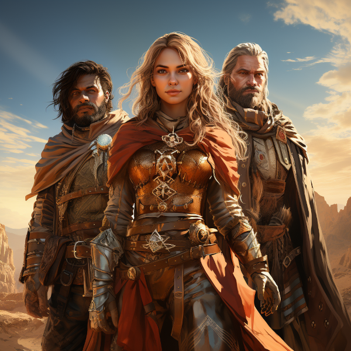

Characters
☰Characters of Naurrnen

Figure 1: Treasure Hunters in the Desert of Kaukloutan
In the enchanting world of Naurrnen, characters from diverse backgrounds and realms come to life, each bringing a unique perspective to the ever-unfolding tapestry of history, politics, and magic. From the illustrious halls of the University of Naethanor to the hidden chambers of Laurië Citime, scholars, heroes, and enigmatic figures each have a role to play.
At the heart of many tales is Elirandel, an Elven scholar who defied her own empire to seek freedom and wisdom, forever changing the course of history. Her partner, Cormac, once an enslaved Adama, is the brilliant mind behind revolutionary strategies that have shaped empires. His tactical genius is equally matched by his quest for knowledge, making him a revered figure in military and scholarly circles alike.
Faelinoril Galathil, the enigmatic head of the Archiver’s Guild in Laurië Citime, stands as a guardian of ancient secrets and a living archive of a world that never ceases to evolve. Yet, even he is a part of something much bigger, an intricate web of destinies tied to characters still unknown.
Amid these towering figures are countless others—kings and commoners, wizards and warriors, each contributing their verse to the epic song of Naurrnen. What binds them all is a world rich in lore and rife with conflict, a stage upon which each will find their place, and perhaps leave behind a legacy that echoes through the annals of time.
So, step into Naurrnen—a world not just built on myths and legends, but on the unforgettable characters that make those stories worth telling.